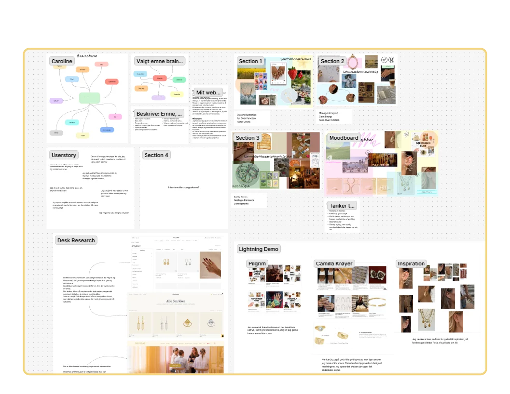
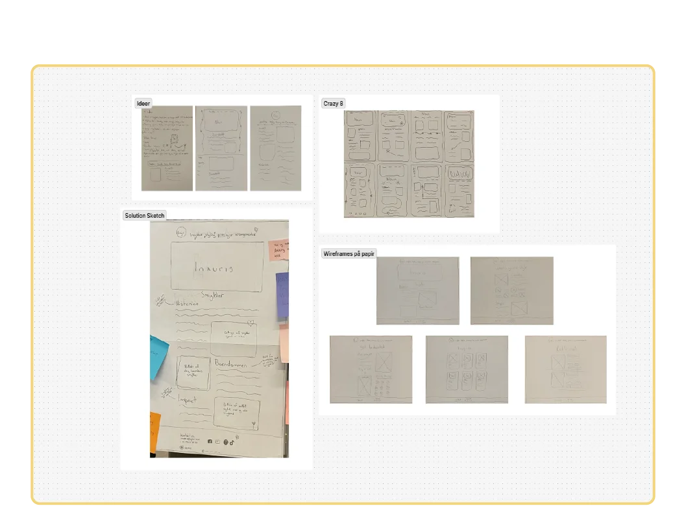
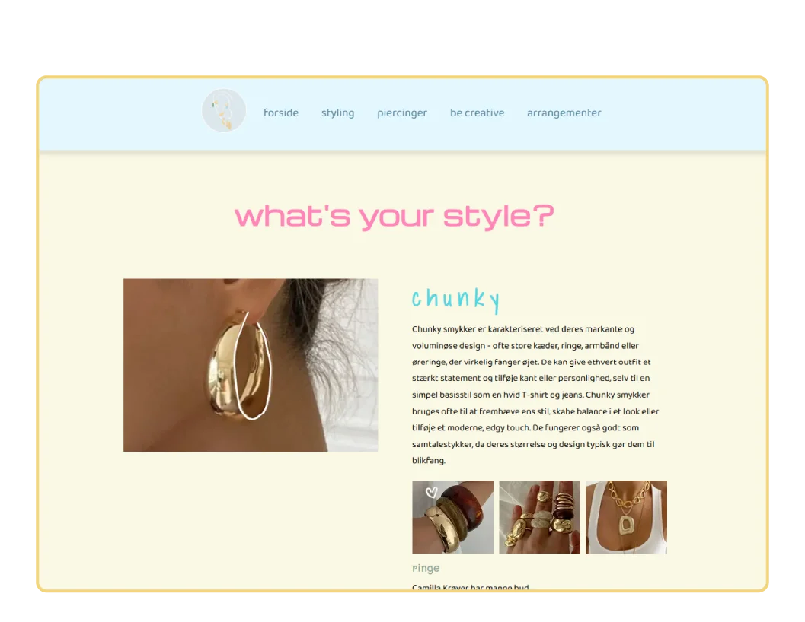

Grundlæggende UX/UI
Tema 3
Formål
Formålet med temaet er at give dig erfaring med udvalgte UX/UI-metoder samt at lære dig, hvordan du præsenterer din proces med design og udvikling af produkt/løsning, samt formidler dine research- og testresultater for interessenter.

Ideer og research
Fra brainstorm til visuel retning
I tema 3 lærte jeg, hvordan man opbygger et website fra start til slut. Processen startede med en brainstorm, hvor formålet var at få alle mine interesser og idéer ned på papir. Ud fra det valgte jeg at arbejde med et emne om smykker.
Herefter gik jeg i gang med min research. Jeg søgte blandt andet inspiration på eksisterende hjemmesider og udarbejdede forskellige moodboards med tilhørende værdiord. Denne metode var utrolig effektiv til at udforske mine kreative idéer og visualisere forskellige designretninger, hvilket gjorde det langt nemmere for mig at vælge det endelige udtryk.
Udforskning af Figmas funktioner
Til at dokumentere hele min proces brugte jeg Figma. Jeg havde arbejdet en smule med programmet før, men det var i særgrad i dette tema, at jeg fik en dybere forståelse for de mange funktioner, programmet tilbyder, og hvor bredt jeg kan anvende det i min designproces.

Wireframes
Idegenerering med Crazy 8's
I dette tema blev jeg introduceret for forskellige måder at idégenerere wireframes på. Jeg startede med at skitsere de første idéer i hånden på papir og afprøvede derefter øvelsen Crazy 8's. Metoden går ud på, at man folder et papir i otte firkanter og sætter et stopur på otte minutter, hvor man skal nå at tegne én wireframe pr. minut.
Øvelsen hjælper med at slippe kontrollen og stoppe med at overtænke det visuelle udtryk. Det var faktisk en del sværere end det lyder, fordi det er udfordrende ikke at tænke på, om designet ser pænt ud.
Fra hurtig skitse til Solution Sketch
Efterfølgende arbejdede jeg videre med de bedste idéer fra øvelsen og udarbejdede et Solution Sketch, som er en mere detaljeret og udviklet wireframe. Jeg synes, det var nogle utrolig gode metoder at lære. Det er en effektiv måde at generere mange forskellige idéer til et layout på, og det fungerer særligt godt, hvis man føler, at man sidder lidt fast i designprocessen.

Websiden
I gang med koden
Efter en grundig proces med research og designudvikling var det tid til at kode og samle websiden. Det var ikke den nemmeste opgave, og resultatet blev helt sikkert ikke perfekt, men jeg lærte utrolig meget undervejs.
Jeg valgte bevidst at udfordre mine egne kompetencer ved at kaste mig ud i en mere avanceret grid-opsætning. Det tog en del tid og krævede meget fejlfinding, men jeg kom i mål med et resultat, jeg er rigtig godt tilfreds med.
Læring om farver, skrifttyper og kontraster
Undervejs fik jeg også øjnene op for, hvor kompleks designprocessen kan være, især når det gælder valg af farver og fonte.
Jeg fandt ud af, at det er en stor udfordring at ramme de rigtige farvekontraster. En farve kan være rigtig flot i sig selv, men ændre fuldstændig udtryk, når den bliver sat sammen med andre farver og elementer. Det er en erfaring, jeg har taget til mig, og jeg vil fremadrettet fokusere meget mere på farvesammensætning.
Det samme gjorde sig gældende med skrifttyper, som i høj grad kan enten styrke eller bryde websidens visuelle sammenhæng. Derfor har jeg besluttet, at jeg i fremtidige projekter vil eksperimentere endnu mere med forskellige kombinationer og inddrage brugertest og feedback fra andre. På den måde kan jeg bedre ramme det helt rigtige udtryk og vække mine projekter til live.